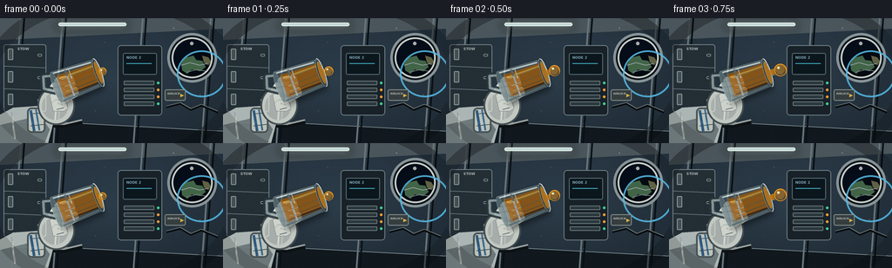
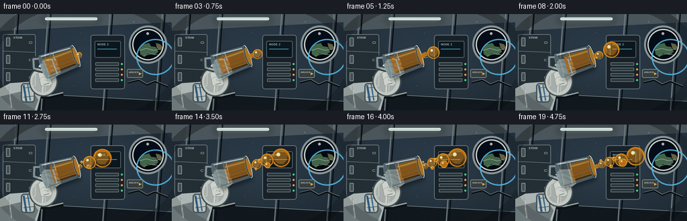
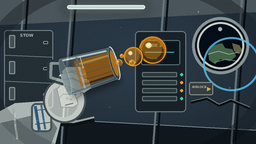
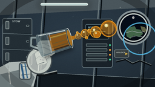

CODING AGENTS AS PIXEL WORLD MODELS
traex/GPT-5.6-Sol · phygen_002
点击播放 · 原生 RGB 像素
逐轮保存的候选
回放视频、检查图与代码变化。
每份候选均可单独播放。实际图片检查记录在下方工具轨迹中。
候选 01播放与检查图
点击播放 · 原生 RGB 像素


展开代码变化
--- 上一保存版本
+++ 本次保存版本
@@ -0,0 +1,294 @@
+from pathlib import Path
+import math
+import numpy as np
+from PIL import Image, ImageDraw, ImageFont, ImageFilter
+import artifact_io
+
+W,H,N,S = 256,144,20,4
+TAU=math.tau
+ROOT=Path(__file__).resolve().parent
+
+def sc(v): return int(round(v*S))
+def pts_scaled(points): return [(sc(x),sc(y)) for x,y in points]
+def font(size, bold=False):
+ p='/usr/share/fonts/truetype/dejavu/DejaVuSans-Bold.ttf' if bold else '/usr/share/fonts/truetype/dejavu/DejaVuSans.ttf'
+ return ImageFont.truetype(p, sc(size))
+
+def rgba_layer(): return Image.new('RGBA',(W*S,H*S),(0,0,0,0))
+def ellipse(draw,box,fill,outline=None,width=1):
+ draw.ellipse(tuple(sc(x) for x in box),fill=fill,outline=outline,width=max(1,sc(width)))
+def line(draw,xy,fill,width=1,joint='curve'):
+ draw.line(pts_scaled(xy),fill=fill,width=max(1,sc(width)),joint=joint)
+def polygon(draw,p,fill,outline=None): draw.polygon(pts_scaled(p),fill=fill,outline=outline)
+def rect(draw,b,fill,outline=None,width=1,radius=0):
+ bb=tuple(sc(x) for x in b)
+ if radius: draw.rounded_rectangle(bb,sc(radius),fill=fill,outline=outline,width=max(1,sc(width)))
+ else: draw.rectangle(bb,fill=fill,outline=outline,width=max(1,sc(width)))
+
+def composite(base,lay): return Image.alpha_composite(base,lay)
+
+def transform(cx,cy,ang,x,y):
+ c,s=math.cos(ang),math.sin(ang)
+ return cx+x*c-y*s, cy+x*s+y*c
+
+def sample_ellipse(cx,cy,rx,ry,ang,n=40):
+ return [transform(cx,cy,ang,rx*math.cos(TAU*i/n),ry*math.sin(TAU*i/n)) for i in range(n)]
+
+def background(frame):
+ # Cool, gently vignetted orbital-module lighting.
+ yy,xx=np.mgrid[0:H*S,0:W*S]/S
+ r=np.sqrt(((xx-132)/177)**2+((yy-72)/116)**2)
+ base=np.zeros((H*S,W*S,4),dtype=np.uint8)
+ base[...,0]=np.clip(29+13*(1-r)+5*(1-yy/H),15,48)
+ base[...,1]=np.clip(40+17*(1-r)+7*(1-yy/H),22,64)
+ base[...,2]=np.clip(49+20*(1-r)+9*(1-yy/H),28,77)
+ base[...,3]=255
+ im=Image.fromarray(base,'RGBA'); d=ImageDraw.Draw(im,'RGBA')
+ # Curved pressure hull and structural ribs.
+ d.ellipse((sc(-132),sc(-177),sc(385),sc(225)),outline=(116,132,140,90),width=sc(7))
+ d.ellipse((sc(-112),sc(-160),sc(365),sc(209)),outline=(16,24,30,170),width=sc(3))
+ polygon(d,[(0,0),(256,0),(256,12),(0,25)],(74,86,92,110))
+ polygon(d,[(0,116),(256,130),(256,144),(0,144)],(17,25,31,210))
+ line(d,[(0,116),(256,130)],(128,143,147,85),1)
+ for x in [24,72,164,242]:
+ line(d,[(x,-5),(x-11,145)],(103,117,121,65),2)
+ line(d,[(x+4,-5),(x-7,145)],(10,17,22,125),2)
+ # Rear storage lockers.
+ rect(d,(4,30,53,108),(35,46,53,225),(111,125,129,130),1,3)
+ for y in [55,81]: line(d,[(5,y),(52,y+2)],(107,123,128,100),1)
+ for y in [35,61,87]:
+ rect(d,(9,y,15,y+13),(66,79,84,220),(140,151,150,100),1,1)
+ rect(d,(43,y+6,48,y+9),(12,18,22,200),(121,137,139,120),1,1)
+ d.text((sc(20),sc(33)),"STOW",font=font(4,True),fill=(169,181,179,125))
+ # Center equipment rack with indicator lights.
+ rect(d,(135,31,186,112),(25,34,41,230),(108,125,132,130),1,4)
+ rect(d,(141,40,180,65),(12,22,29,235),(85,108,117,150),1,2)
+ for k in range(4):
+ yy0=72+k*8
+ rect(d,(142,yy0,177,yy0+5),(42,55,61,230),(103,118,120,90),1,1)
+ ellipse(d,(180,yy0+1,183,yy0+4),((63,205,145,210) if k in (0,3) else (240,155,58,185)))
+ d.text((sc(145),sc(43)),"NODE 2",font=font(4,True),fill=(125,166,178,180))
+ line(d,[(145,52),(174,52)],(67,171,193,130),1)
+ # Porthole at upper right: Earth identifies orbital setting.
+ ellipse(d,(192,17,249,74),(14,20,27,255),(135,148,151,220),3)
+ ellipse(d,(197,22,244,69),(5,10,18,255),(197,206,200,160),2)
+ port=rgba_layer(); pd=ImageDraw.Draw(port,'RGBA')
+ ellipse(pd,(199,24,242,67),(5,13,25,255))
+ # Earth limb, ocean and illuminated atmospheric rim.
+ ellipse(pd,(204,39,260,91),(30,84,132,255))
+ ellipse(pd,(203,37,260,91),(0,0,0,0),(85,184,226,220),2)
+ polygon(pd,[(208,51),(214,45),(222,43),(225,48),(232,49),(236,56),(230,61),(220,59),(215,64),(209,60)],(79,121,83,210))
+ polygon(pd,[(232,43),(239,45),(242,50),(239,54),(234,51)],(150,150,100,160))
+ # cloud streaks
+ line(pd,[(208,54),(218,51),(229,54),(238,52)],(225,237,234,170),1)
+ line(pd,[(214,62),(226,59),(237,61)],(225,237,240,130),1)
+ ellipse(pd,(218,27,222,31),(255,255,247,170))
+ im=composite(im,port)
+ d=ImageDraw.Draw(im,'RGBA')
+ # Handrails and floating utility cable.
+ line(d,[(9,121),(73,124),(94,119)],(13,18,21,220),5)
+ line(d,[(9,119),(73,122),(94,117)],(155,163,160,200),2)
+ ellipse(d,(7,114,13,125),(99,109,109,255),(190,197,193,180),1)
+ line(d,[(191,102),(207,98),(219,105),(231,100),(250,108)],(8,13,17,180),3)
+ line(d,[(191,101),(207,97),(219,104),(231,99),(250,107)],(111,122,121,140),1)
+ # Overhead light and soft bloom.
+ glow=rgba_layer(); gd=ImageDraw.Draw(glow,'RGBA')
+ rect(gd,(65,5,147,11),(207,230,226,130),radius=3)
+ glow=glow.filter(ImageFilter.GaussianBlur(sc(5))); im=composite(im,glow)
+ d=ImageDraw.Draw(im,'RGBA')
+ rect(d,(67,5,145,9),(191,214,211,190),(231,241,235,130),1,2)
+ # Tiny orientation arrows/signage.
+ rect(d,(189,82,213,95),(54,62,64,180),(132,141,137,100),1,2)
+ d.text((sc(192),sc(85)),"AIRLOCK",font=font(3,True),fill=(182,190,182,150))
+ polygon(d,[(207,91),(211,89),(207,87)],(215,177,68,170))
+ # Slight cinematic grain, fixed spatially with minute temporal change.
+ arr=np.asarray(im).astype(np.int16)
+ rng=np.random.default_rng(741)
+ grain=rng.normal(0,1.7,(H*S,W*S,1))
+ arr[...,:3]=np.clip(arr[...,:3]+grain,0,255)
+ return Image.fromarray(arr.astype(np.uint8),'RGBA')
+
+def draw_glove(im, frame, cx,cy,ang):
+ # White EVA glove comes from lower left and wraps around the cup base.
+ lay=rgba_layer(); d=ImageDraw.Draw(lay,'RGBA')
+ # forearm cuff and sleeve
+ polygon(d,[(0,111),(15,103),(43,101),(62,117),(55,144),(0,144)],(171,181,179,255))
+ polygon(d,[(0,123),(46,112),(57,128),(51,144),(0,144)],(110,122,124,245))
+ line(d,[(13,108),(17,139)],(223,229,222,170),2)
+ rect(d,(31,103,52,132),(190,197,190,250),(74,85,88,240),2,5)
+ line(d,[(35,110),(50,109)],(86,97,99,170),1)
+ line(d,[(35,124),(51,122)],(86,97,99,170),1)
+ # palm under cup
+ ellipse(d,(43,78,86,123),(192,200,193,255),(70,79,82,230),2)
+ ellipse(d,(48,86,78,117),(220,224,216,180))
+ # four curled fingers gripping cup, oriented visually around its left side
+ fingers=[(62,67,87,80,-7),(58,76,84,89,-4),(57,85,81,98,0),(59,94,78,107,5)]
+ for x0,y0,x1,y1,tilt in fingers:
+ polygon(d,[(x0,y0+4),(x0+4,y0),(x1-3,y0+tilt*.1),(x1,y1-3),(x1-5,y1),(x0+2,y1)],(205,211,203,255),(80,89,91,220))
+ line(d,[(x0+7,y0+4),(x1-6,y0+5+tilt*.1)],(239,241,233,175),2)
+ line(d,[(x0+6,y1-2),(x1-5,y1-4)],(119,129,127,150),1)
+ # thumb crossing the near side of cup
+ polygon(d,[(54,83),(60,74),(72,72),(89,80),(91,88),(84,93),(70,87)],(218,223,215,255),(79,89,90,230))
+ line(d,[(60,80),(72,78),(85,84)],(248,248,239,170),2)
+ # blue wrist identification stripes
+ line(d,[(35,106),(39,130)],(47,95,137,220),3)
+ line(d,[(41,105),(45,129)],(63,117,157,200),2)
+ return composite(im,lay)
+
+def draw_cup(im, frame):
+ # Tilt a little farther as oil is deliberately eased out.
+ u=frame/(N-1)
+ ang=math.radians(-20 + 5*math.sin(u*math.pi/2))
+ cx=92+1.5*u; cy=70-1.5*u
+ im=draw_glove(im,frame,cx,cy,ang)
+ # cup shadow
+ sh=rgba_layer(); sd=ImageDraw.Draw(sh,'RGBA')
+ body=[transform(cx+2,cy+3,ang,-28,-20),transform(cx+2,cy+3,ang,22,-17),transform(cx+2,cy+3,ang,22,17),transform(cx+2,cy+3,ang,-28,20)]
+ polygon(sd,body,(0,0,0,105)); sh=sh.filter(ImageFilter.GaussianBlur(sc(3))); im=composite(im,sh)
+ lay=rgba_layer(); d=ImageDraw.Draw(lay,'RGBA')
+ # handle behind the vessel
+ hp=[transform(cx,cy,ang,-24,-13),transform(cx,cy,ang,-39,-17),transform(cx,cy,ang,-43,-4),transform(cx,cy,ang,-31,4)]
+ line(d,hp,(41,53,59,230),8)
+ line(d,hp,(147,164,165,210),3)
+ # transparent body silhouette
+ body=[transform(cx,cy,ang,-29,-19),transform(cx,cy,ang,22,-16),transform(cx,cy,ang,22,16),transform(cx,cy,ang,-29,19)]
+ polygon(d,body,(126,154,159,82),(198,214,212,220))
+ # Internal oil coating/mass shrinks over time, remains attached by wetting.
+ remain=1-u*0.62
+ x0=-24 + 21*(1-remain)
+ oilpoly=[transform(cx,cy,ang,x0,-13),transform(cx,cy,ang,20,-12),transform(cx,cy,ang,21,12),transform(cx,cy,ang,x0,14)]
+ polygon(d,oilpoly,(174,103,20,185))
+ # warm interior bands / meniscus
+ q1=transform(cx,cy,ang,x0+2,-9); q2=transform(cx,cy,ang,19,-9)
+ line(d,[q1,q2],(249,185,57,170),2)
+ q1=transform(cx,cy,ang,x0+2,12); q2=transform(cx,cy,ang,18,11)
+ line(d,[q1,q2],(90,47,9,125),2)
+ # volume streaks show viscous adhesion to wall
+ for ofs,alpha in [(-7,110),(2,80),(8,65)]:
+ a=transform(cx,cy,ang,x0+4,ofs); b=transform(cx,cy,ang,18,ofs-1)
+ line(d,[a,b],(255,202,82,alpha),1)
+ # Near glass sheen and edges.
+ q=[transform(cx,cy,ang,-27,-17),transform(cx,cy,ang,18,-14)]
+ line(d,q,(235,246,242,185),2)
+ q=[transform(cx,cy,ang,-27,17),transform(cx,cy,ang,18,14)]
+ line(d,q,(91,111,118,220),2)
+ # vertical highlights on acrylic
+ line(d,[transform(cx,cy,ang,-13,-16),transform(cx,cy,ang,-13,16)],(232,245,242,80),2)
+ line(d,[transform(cx,cy,ang,-9,-15),transform(cx,cy,ang,-9,-4)],(255,255,250,150),1)
+ # base plate
+ bp=sample_ellipse(*transform(cx,cy,ang,-29,0),3.7,19,ang,36)
+ polygon(d,bp,(104,125,130,170),(202,214,210,200))
+ # Mouth/rim and visible amber meniscus.
+ mouth=transform(cx,cy,ang,22,0)
+ rim=sample_ellipse(mouth[0],mouth[1],3.9,17.2,ang,42)
+ polygon(d,rim,(104,126,129,80),(220,230,224,235))
+ men=sample_ellipse(mouth[0]+.2,mouth[1],2.4,13.3,ang,38)
+ polygon(d,men,(207,131,27,200),(255,195,66,210))
+ # rim glare
+ arc=[transform(mouth[0],mouth[1],ang,3.4*math.cos(t),17*math.sin(t)) for t in np.linspace(-math.pi/2,math.pi/2,18)]
+ line(d,arc,(250,251,240,210),1)
+ im=composite(im,lay)
+ # Exit point is leading/right side of meniscus along cup axis.
+ exitp=transform(cx,cy,ang,25.0,0)
+ return im, exitp, ang
+
+def oil_drop_layer(exitp,frame,ang):
+ # Oil is cohesive in microgravity: tendrils neck down, then become drifting spheres.
+ lay=rgba_layer(); d=ImageDraw.Draw(lay,'RGBA')
+ ex,ey=exitp
+ axis=(math.cos(ang),math.sin(ang))
+ normal=(-axis[1],axis[0])
+ def pos(age,vx,wiggle=0,phase=0):
+ dist=vx*age
+ return (ex+axis[0]*dist+normal[0]*(wiggle*math.sin(age*.42+phase)),
+ ey+axis[1]*dist+normal[1]*(wiggle*math.sin(age*.42+phase)))
+ # emission events: release frame, speed, mature radius, transverse undulation
+ events=[(0,3.22,13.5,1.8,.0),(6,3.02,9.5,2.4,1.2),(11,2.72,7.1,1.4,2.2),(15,2.45,5.2,1.0,.5)]
+ active=[]
+ for rel,vel,rmax,wig,phase in events:
+ age=frame-rel
+ if age<0: continue
+ c=pos(age+0.7,vel,wig,phase)
+ r=min(rmax,3.2+age*1.38)
+ # leading blob can accrete slightly while coasting
+ if rel==0: r=min(rmax,4.3+age*.95)
+ active.append((rel,age,c,r,vel,wig,phase))
+ # Tendril for newest release, attached for several frames.
+ if active:
+ rel,age,c,r,vel,wig,phase=active[-1]
+ if age<=5:
+ dist=math.hypot(c[0]-ex,c[1]-ey)
+ steps=max(5,int(dist/2)+2)
+ upper=[]; lower=[]
+ for i in range(steps):
+ t=i/(steps-1)
+ x=ex+(c[0]-ex)*t + normal[0]*1.1*math.sin(t*math.pi*2+frame*.35)*(1-t)
+ y=ey+(c[1]-ey)*t + normal[1]*1.1*math.sin(t*math.pi*2+frame*.35)*(1-t)
+ # neck narrows in middle before a bulb at the front
+ wid=(3.8*(1-t)+r*.75*t)*(0.82-0.28*math.sin(math.pi*t)**2)
+ upper.append((x+normal[0]*wid,y+normal[1]*wid))
+ lower.append((x-normal[0]*wid,y-normal[1]*wid))
+ polygon(d,upper+lower[::-1],(192,116,18,235),(244,176,48,210))
+ line(d,[upper[1],upper[-2]],(255,210,86,160),1)
+ else:
+ # a wet bead remains at the lip between releases
+ rp=2.4+0.5*math.sin(frame*.8)
+ ellipse(d,(ex-rp,ey-rp,ex+rp,ey+rp),(203,125,22,220),(255,196,65,190),1)
+ # Detached and attached globules. A shadow under each gives glassy volume.
+ for rel,age,(x,y),r,*rest in active:
+ # draw subtle amber aura
+ ellipse(d,(x-r*1.08,y-r*1.08,x+r*1.08,y+r*1.08),(120,69,7,55))
+ ellipse(d,(x-r,y-r,x+r,y+r),(192,111,14,238),(243,166,42,230),1)
+ # dark refracted lower rim
+ ellipse(d,(x-r*.77,y-r*.58,x+r*.83,y+r*.90),(133,69,7,92))
+ # interior golden core
+ ellipse(d,(x-r*.76,y-r*.79,x+r*.68,y+r*.66),(226,143,28,110))
+ # specular double highlight always facing overhead light
+ ellipse(d,(x-r*.51,y-r*.57,x-r*.09,y-r*.16),(255,235,152,220))
+ ellipse(d,(x-r*.39,y-r*.48,x-r*.21,y-r*.30),(255,255,224,225))
+ # soft lower reflected line
+ line(d,[(x-r*.45,y+r*.54),(x+r*.33,y+r*.64)],(255,181,50,105),1)
+ # Satellite droplets separate from main stream, preserving deterministic trajectories.
+ satellites=[(8,3.55,4.0,6.0),(10,3.15,-5.0,3.1),(13,3.45,5.6,2.5),(16,2.9,-6.0,2.0)]
+ for rel,vel,off,rad in satellites:
+ age=frame-rel
+ if age<0: continue
+ dist=vel*(age+1)
+ x=ex+axis[0]*dist+normal[0]*(off+0.18*age)
+ y=ey+axis[1]*dist+normal[1]*(off+0.18*age)
+ r=min(rad,1.5+age*.48)
+ ellipse(d,(x-r,y-r,x+r,y+r),(196,113,14,235),(246,177,50,215),1)
+ ellipse(d,(x-r*.55,y-r*.62,x-r*.08,y-r*.12),(255,237,161,205))
+ # Blur only a very faint glow behind crisp oil.
+ glow=lay.filter(ImageFilter.GaussianBlur(sc(.7)))
+ glow.putalpha(glow.getchannel('A').point(lambda a:a//4))
+ return composite(glow,lay)
+
+def draw_foreground_dust(im,frame):
+ # A few slow free-floating crumbs emphasize weightlessness without distracting.
+ lay=rgba_layer(); d=ImageDraw.Draw(lay,'RGBA')
+ for i,(x,y) in enumerate([(120,27),(229,88),(157,122),(199,12),(110,107)]):
+ xx=x+math.sin(frame*.12+i)*.8; yy=y+math.cos(frame*.09+i)*.6
+ r=.35+(i%2)*.25
+ ellipse(d,(xx-r,yy-r,xx+r,yy+r),(205,216,210,80))
+ return composite(im,lay)
+
+def render(frame):
+ im=background(frame)
+ im=draw_foreground_dust(im,frame)
+ im,exitp,ang=draw_cup(im,frame)
+ oil=oil_drop_layer(exitp,frame,ang)
+ im=composite(im,oil)
+ # mild vignette and final antialiased reduction
+ ov=rgba_layer(); od=ImageDraw.Draw(ov,'RGBA')
+ od.rectangle((0,0,W*S,H*S),fill=(0,0,0,0))
+ # transparent dark edge via huge outline ellipses
+ od.ellipse((sc(-20),sc(-28),sc(276),sc(172)),outline=(0,0,0,38),width=sc(15))
+ im=composite(im,ov)
+ return np.asarray(im.convert('RGB').resize((W,H),Image.Resampling.LANCZOS),dtype=np.uint8)
+
+def main():
+ frames=np.stack([render(i) for i in range(N)])
+ artifact_io.save(frames,ROOT)
+
+if __name__=='__main__': main()
可观测工具轨迹
实际执行的命令与返回图片。
命令 1exit 0
/bin/bash -lc "cat prompt.txt && printf '\\n--- GENERATION_RULES ---\\n' && cat GENERATION_RULES.md"
命令 2exit 0
/bin/bash -lc "cat task_spec.json && printf '\\n--- FILES ---\\n' && find . -maxdepth 2 -type f -printf '%p\\n' | sort"
命令 3exit 0
/bin/bash -lc 'cat artifact_io.py'
命令 4exit 0
/bin/bash -lc "cat > generate.py <<'PY'
from pathlib import Path
import math
import numpy as np
from PIL import Image, ImageDraw, ImageFont, ImageFilter
import artifact_io
W,H,N,S = 256,144,20,4
TAU=math.tau
ROOT=Path(__file__).resolve().parent
def sc(v): return int(round(v*S))
def pts_scaled(points): return [(sc(x),sc(y)) for x,y in points]
def font(size, bold=False):
p='/usr/share/fonts/truetype/dejavu/DejaVuSans-Bold.ttf' if bold else '/usr/share/fonts/truetype/dejavu/DejaVuSans.ttf'
return ImageFont.truetype(p, sc(size))
def rgba_layer(): return Image.new('RGBA',(W*S,H*S),(0,0,0,0))
def ellipse(draw,box,fill,outline=None,width=1):
draw.ellipse(tuple(sc(x) for x in box),fill=fill,outline=outline,width=max(1,sc(width)))
def line(draw,xy,fill,width=1,joint='curve'):
draw.line(pts_scaled(xy),fill=fill,width=max(1,sc(width)),joint=joint)
def polygon(draw,p,fill,outline=None): draw.polygon(pts_scaled(p),fill=fill,outline=outline)
def rect(draw,b,fill,outline=None,width=1,radius=0):
bb=tuple(sc(x) for x in b)
if radius: draw.rounded_rectangle(bb,sc(radius),fill=fill,outline=outline,width=max(1,sc(width)))
else: draw.rectangle(bb,fill=fill,outline=outline,width=max(1,sc(width)))
def composite(base,lay): return Image.alpha_composite(base,lay)
def transform(cx,cy,ang,x,y):
c,s=math.cos(ang),math.sin(ang)
return cx+x*c-y*s, cy+x*s+y*c
def sample_ellipse(cx,cy,rx,ry,ang,n=40):
return [transform(cx,cy,ang,rx*math.cos(TAU*i/n),ry*math.sin(TAU*i/n)) for i in range(n)]
def background(frame):
# Cool, gently vignetted orbital-module lighting.
yy,xx=np.mgrid[0:H*S,0:W*S]/S
r=np.sqrt(((xx-132)/177)**2+((yy-72)/116)**2)
base=np.zeros((H*S,W*S,4),dtype=np.uint8)
base[...,0]=np.clip(29+13*(1-r)+5*(1-yy/H),15,48)
base[...,1]=np.clip(40+17*(1-r)+7*(1-yy/H),22,64)
base[...,2]=np.clip(49+20*(1-r)+9*(1-yy/H),28,77)
base[...,3]=255
im=Image.fromarray(base,'RGBA'); d=ImageDraw.Draw(im,'RGBA')
# Curved pressure hull and structural ribs.
d.ellipse((sc(-132),sc(-177),sc(385),sc(225)),outline=(116,132,140,90),width=sc(7))
d.ellipse((sc(-112),sc(-160),sc(365),sc(209)),outline=(16,24,30,170),width=sc(3))
polygon(d,[(0,0),(256,0),(256,12),(0,25)],(74,86,92,110))
polygon(d,[(0,116),(256,130),(256,144),(0,144)],(17,25,31,210))
line(d,[(0,116),(256,130)],(128,143,147,85),1)
for x in [24,72,164,242]:
line(d,[(x,-5),(x-11,145)],(103,117,121,65),2)
line(d,[(x+4,-5),(x-7,145)],(10,17,22,125),2)
# Rear storage lockers.
rect(d,(4,30,53,108),(35,46,53,225),(111,125,129,130),1,3)
for y in [55,81]: line(d,[(5,y),(52,y+2)],(107,123,128,100),1)
for y in [35,61,87]:
rect(d,(9,y,15,y+13),(66,79,84,220),(140,151,150,100),1,1)
rect(d,(43,y+6,48,y+9),(12,18,22,200),(121,137,139,120),1,1)
d.text((sc(20),sc(33)),\"STOW\",font=font(4,True),fill=(169,181,179,125))
# Center equipment rack with indicator lights.
rect(d,(135,31,186,112),(25,34,41,230),(108,125,132,130),1,4)
rect(d,(141,40,180,65),(12,22,29,235),(85,108,117,150),1,2)
for k in range(4):
yy0=72+k*8
rect(d,(142,yy0,177,yy0+5),(42,55,61,230),(103,118,120,90),1,1)
ellipse(d,(180,yy0+1,183,yy0+4),((63,205,145,210) if k in (0,3) else (240,155,58,185)))
d.text((sc(145),sc(43)),\"NODE 2\",font=font(4,True),fill=(125,166,178,180))
line(d,[(145,52),(174,52)],(67,171,193,130),1)
# Porthole at upper right: Earth identifies orbital setting.
ellipse(d,(192,17,249,74),(14,20,27,255),(135,148,151,220),3)
ellipse(d,(197,22,244,69),(5,10,18,255),(197,206,200,160),2)
port=rgba_layer(); pd=ImageDraw.Draw(port,'RGBA')
ellipse(pd,(199,24,242,67),(5,13,25,255))
# Earth limb, ocean and illuminated atmospheric rim.
ellipse(pd,(204,39,260,91),(30,84,132,255))
ellipse(pd,(203,37,260,91),(0,0,0,0),(85,184,226,220),2)
polygon(pd,[(208,51),(214,45),(222,43),(225,48),(232,49),(236,56),(230,61),(220,59),(215,64),(209,60)],(79,121,83,210))
polygon(pd,[(232,43),(239,45),(242,50),(239,54),(234,51)],(150,150,100,160))
# cloud streaks
line(pd,[(208,54),(218,51),(229,54),(238,52)],(225,237,234,170),1)
line(pd,[(214,62),(226,59),(237,61)],(225,237,240,130),1)
ellipse(pd,(218,27,222,31),(255,255,247,170))
im=composite(im,port)
d=ImageDraw.Draw(im,'RGBA')
# Handrails and floating utility cable.
line(d,[(9,121),(73,124),(94,119)],(13,18,21,220),5)
line(d,[(9,119),(73,122),(94,117)],(155,163,160,200),2)
ellipse(d,(7,114,13,125),(99,109,109,255),(190,197,193,180),1)
line(d,[(191,102),(207,98),(219,105),(231,100),(250,108)],(8,13,17,180),3)
line(d,[(191,101),(207,97),(219,104),(231,99),(250,107)],(111,122,121,140),1)
# Overhead light and soft bloom.
glow=rgba_layer(); gd=ImageDraw.Draw(glow,'RGBA')
rect(gd,(65,5,147,11),(207,230,226,130),radius=3)
glow=glow.filter(ImageFilter.GaussianBlur(sc(5))); im=composite(im,glow)
d=ImageDraw.Draw(im,'RGBA')
rect(d,(67,5,145,9),(191,214,211,190),(231,241,235,130),1,2)
# Tiny orientation arrows/signage.
rect(d,(189,82,213,95),(54,62,64,180),(132,141,137,100),1,2)
d.text((sc(192),sc(85)),\"AIRLOCK\",font=font(3,True),fill=(182,190,182,150))
polygon(d,[(207,91),(211,89),(207,87)],(215,177,68,170))
# Slight cinematic grain, fixed spatially with minute temporal change.
arr=np.asarray(im).astype(np.int16)
rng=np.random.default_rng(741)
grain=rng.normal(0,1.7,(H*S,W*S,1))
arr[...,:3]=np.clip(arr[...,:3]+grain,0,255)
return Image.fromarray(arr.astype(np.uint8),'RGBA')
def draw_glove(im, frame, cx,cy,ang):
# White EVA glove comes from lower left and wraps around the cup base.
lay=rgba_layer(); d=ImageDraw.Draw(lay,'RGBA')
# forearm cuff and sleeve
polygon(d,[(0,111),(15,103),(43,101),(62,117),(55,144),(0,144)],(171,181,179,255))
polygon(d,[(0,123),(46,112),(57,128),(51,144),(0,144)],(110,122,124,245))
line(d,[(13,108),(17,139)],(223,229,222,170),2)
rect(d,(31,103,52,132),(190,197,190,250),(74,85,88,240),2,5)
line(d,[(35,110),(50,109)],(86,97,99,170),1)
line(d,[(35,124),(51,122)],(86,97,99,170),1)
# palm under cup
ellipse(d,(43,78,86,123),(192,200,193,255),(70,79,82,230),2)
ellipse(d,(48,86,78,117),(220,224,216,180))
# four curled fingers gripping cup, oriented visually around its left side
fingers=[(62,67,87,80,-7),(58,76,84,89,-4),(57,85,81,98,0),(59,94,78,107,5)]
for x0,y0,x1,y1,tilt in fingers:
polygon(d,[(x0,y0+4),(x0+4,y0),(x1-3,y0+tilt*.1),(x1,y1-3),(x1-5,y1),(x0+2,y1)],(205,211,203,255),(80,89,91,220))
line(d,[(x0+7,y0+4),(x1-6,y0+5+tilt*.1)],(239,241,233,175),2)
line(d,[(x0+6,y1-2),(x1-5,y1-4)],(119,129,127,150),1)
# thumb crossing the near side of cup
polygon(d,[(54,83),(60,74),(72,72),(89,80),(91,88),(84,93),(70,87)],(218,223,215,255),(79,89,90,230))
line(d,[(60,80),(72,78),(85,84)],(248,248,239,170),2)
# blue wrist identification stripes
line(d,[(35,106),(39,130)],(47,95,137,220),3)
line(d,[(41,105),(45,129)],(63,117,157,200),2)
return composite(im,lay)
def draw_cup(im, frame):
# Tilt a little farther as oil is deliberately eased out.
u=frame/(N-1)
ang=math.radians(-20 + 5*math.sin(u*math.pi/2))
cx=92+1.5*u; cy=70-1.5*u
im=draw_glove(im,frame,cx,cy,ang)
# cup shadow
sh=rgba_layer(); sd=ImageDraw.Draw(sh,'RGBA')
body=[transform(cx+2,cy+3,ang,-28,-20),transform(cx+2,cy+3,ang,22,-17),transform(cx+2,cy+3,ang,22,17),transform(cx+2,cy+3,ang,-28,20)]
polygon(sd,body,(0,0,0,105)); sh=sh.filter(ImageFilter.GaussianBlur(sc(3))); im=composite(im,sh)
lay=rgba_layer(); d=ImageDraw.Draw(lay,'RGBA')
# handle behind the vessel
hp=[transform(cx,cy,ang,-24,-13),transform(cx,cy,ang,-39,-17),transform(cx,cy,ang,-43,-4),transform(cx,cy,ang,-31,4)]
line(d,hp,(41,53,59,230),8)
line(d,hp,(147,164,165,210),3)
# transparent body silhouette
body=[transform(cx,cy,ang,-29,-19),transform(cx,cy,ang,22,-16),transform(cx,cy,ang,22,16),transform(cx,cy,ang,-29,19)]
polygon(d,body,(126,154,159,82),(198,214,212,220))
# Internal oil coating/mass shrinks over time, remains attached by wetting.
remain=1-u*0.62
x0=-24 + 21*(1-remain)
oilpoly=[transform(cx,cy,ang,x0,-13),transform(cx,cy,ang,20,-12),transform(cx,cy,ang,21,12),transform(cx,cy,ang,x0,14)]
polygon(d,oilpoly,(174,103,20,185))
# warm interior bands / meniscus
q1=transform(cx,cy,ang,x0+2,-9); q2=transform(cx,cy,ang,19,-9)
line(d,[q1,q2],(249,185,57,170),2)
q1=transform(cx,cy,ang,x0+2,12); q2=transform(cx,cy,ang,18,11)
line(d,[q1,q2],(90,47,9,125),2)
# volume streaks show viscous adhesion to wall
for ofs,alpha in [(-7,110),(2,80),(8,65)]:
a=transform(cx,cy,ang,x0+4,ofs); b=transform(cx,cy,ang,18,ofs-1)
line(d,[a,b],(255,202,82,alpha),1)
# Near glass sheen and edges.
q=[transform(cx,cy,ang,-27,-17),transform(cx,cy,ang,18,-14)]
line(d,q,(235,246,242,185),2)
q=[transform(cx,cy,ang,-27,17),transform(cx,cy,ang,18,14)]
line(d,q,(91,111,118,220),2)
# vertical highlights on acrylic
line(d,[transform(cx,cy,ang,-13,-16),transform(cx,cy,ang,-13,16)],(232,245,242,80),2)
line(d,[transform(cx,cy,ang,-9,-15),transform(cx,cy,ang,-9,-4)],(255,255,250,150),1)
# base plate
bp=sample_ellipse(*transform(cx,cy,ang,-29,0),3.7,19,ang,36)
polygon(d,bp,(104,125,130,170),(202,214,210,200))
# Mouth/rim and visible amber meniscus.
mouth=transform(cx,cy,ang,22,0)
rim=sample_ellipse(mouth[0],mouth[1],3.9,17.2,ang,42)
polygon(d,rim,(104,126,129,80),(220,230,224,235))
men=sample_ellipse(mouth[0]+.2,mouth[1],2.4,13.3,ang,38)
polygon(d,men,(207,131,27,200),(255,195,66,210))
# rim glare
arc=[transform(mouth[0],mouth[1],ang,3.4*math.cos(t),17*math.sin(t)) for t in np.linspace(-math.pi/2,math.pi/2,18)]
line(d,arc,(250,251,240,210),1)
im=composite(im,lay)
# Exit point is leading/right side of meniscus along cup axis.
exitp=transform(cx,cy,ang,25.0,0)
return im, exitp, ang
def oil_drop_layer(exitp,frame,ang):
# Oil is cohesive in microgravity: tendrils neck down, then become drifting spheres.
lay=rgba_layer(); d=ImageDraw.Draw(lay,'RGBA')
ex,ey=exitp
axis=(math.cos(ang),math.sin(ang))
normal=(-axis[1],axis[0])
def pos(age,vx,wiggle=0,phase=0):
dist=vx*age
return (ex+axis[0]*dist+normal[0]*(wiggle*math.sin(age*.42+phase)),
ey+axis[1]*dist+normal[1]*(wiggle*math.sin(age*.42+phase)))
# emission events: release frame, speed, mature radius, transverse undulation
events=[(0,3.22,13.5,1.8,.0),(6,3.02,9.5,2.4,1.2),(11,2.72,7.1,1.4,2.2),(15,2.45,5.2,1.0,.5)]
active=[]
for rel,vel,rmax,wig,phase in events:
age=frame-rel
if age<0: continue
c=pos(age+0.7,vel,wig,phase)
r=min(rmax,3.2+age*1.38)
# leading blob can accrete slightly while coasting
if rel==0: r=min(rmax,4.3+age*.95)
active.append((rel,age,c,r,vel,wig,phase))
# Tendril for newest release, attached for several frames.
if active:
rel,age,c,r,vel,wig,phase=active[-1]
if age<=5:
dist=math.hypot(c[0]-ex,c[1]-ey)
steps=max(5,int(dist/2)+2)
upper=[]; lower=[]
for i in range(steps):
t=i/(steps-1)
x=ex+(c[0]-ex)*t + normal[0]*1.1*math.sin(t*math.pi*2+frame*.35)*(1-t)
y=ey+(c[1]-ey)*t + normal[1]*1.1*math.sin(t*math.pi*2+frame*.35)*(1-t)
# neck narrows in middle before a bulb at the front
wid=(3.8*(1-t)+r*.75*t)*(0.82-0.28*math.sin(math.pi*t)**2)
upper.append((x+normal[0]*wid,y+normal[1]*wid))
lower.append((x-normal[0]*wid,y-normal[1]*wid))
polygon(d,upper+lower[::-1],(192,116,18,235),(244,176,48,210))
line(d,[upper[1],upper[-2]],(255,210,86,160),1)
else:
# a wet bead remains at the lip between releases
rp=2.4+0.5*math.sin(frame*.8)
ellipse(d,(ex-rp,ey-rp,ex+rp,ey+rp),(203,125,22,220),(255,196,65,190),1)
# Detached and attached globules. A shadow under each gives glassy volume.
for rel,age,(x,y),r,*rest in active:
# draw subtle amber aura
ellipse(d,(x-r*1.08,y-r*1.08,x+r*1.08,y+r*1.08),(120,69,7,55))
ellipse(d,(x-r,y-r,x+r,y+r),(192,111,14,238),(243,166,42,230),1)
# dark refracted lower rim
ellipse(d,(x-r*.77,y-r*.58,x+r*.83,y+r*.90),(133,69,7,92))
# interior golden core
ellipse(d,(x-r*.76,y-r*.79,x+r*.68,y+r*.66),(226,143,28,110))
# specular double highlight always facing overhead light
ellipse(d,(x-r*.51,y-r*.57,x-r*.09,y-r*.16),(255,235,152,220))
ellipse(d,(x-r*.39,y-r*.48,x-r*.21,y-r*.30),(255,255,224,225))
# soft lower reflected line
line(d,[(x-r*.45,y+r*.54),(x+r*.33,y+r*.64)],(255,181,50,105),1)
# Satellite droplets separate from main stream, preserving deterministic trajectories.
satellites=[(8,3.55,4.0,6.0),(10,3.15,-5.0,3.1),(13,3.45,5.6,2.5),(16,2.9,-6.0,2.0)]
for rel,vel,off,rad in satellites:
age=frame-rel
if age<0: continue
dist=vel*(age+1)
x=ex+axis[0]*dist+normal[0]*(off+0.18*age)
y=ey+axis[1]*dist+normal[1]*(off+0.18*age)
r=min(rad,1.5+age*.48)
ellipse(d,(x-r,y-r,x+r,y+r),(196,113,14,235),(246,177,50,215),1)
ellipse(d,(x-r*.55,y-r*.62,x-r*.08,y-r*.12),(255,237,161,205))
# Blur only a very faint glow behind crisp oil.
glow=lay.filter(ImageFilter.GaussianBlur(sc(.7)))
glow.putalpha(glow.getchannel('A').point(lambda a:a//4))
return composite(glow,lay)
def draw_foreground_dust(im,frame):
# A few slow free-floating crumbs emphasize weightlessness without distracting.
lay=rgba_layer(); d=ImageDraw.Draw(lay,'RGBA')
for i,(x,y) in enumerate([(120,27),(229,88),(157,122),(199,12),(110,107)]):
xx=x+math.sin(frame*.12+i)*.8; yy=y+math.cos(frame*.09+i)*.6
r=.35+(i%2)*.25
ellipse(d,(xx-r,yy-r,xx+r,yy+r),(205,216,210,80))
return composite(im,lay)
def render(frame):
im=background(frame)
im=draw_foreground_dust(im,frame)
im,exitp,ang=draw_cup(im,frame)
oil=oil_drop_layer(exitp,frame,ang)
im=composite(im,oil)
# mild vignette and final antialiased reduction
ov=rgba_layer(); od=ImageDraw.Draw(ov,'RGBA')
od.rectangle((0,0,W*S,H*S),fill=(0,0,0,0))
# transparent dark edge via huge outline ellipses
od.ellipse((sc(-20),sc(-28),sc(276),sc(172)),outline=(0,0,0,38),width=sc(15))
im=composite(im,ov)
return np.asarray(im.convert('RGB').resize((W,H),Image.Resampling.LANCZOS),dtype=np.uint8)
def main():
frames=np.stack([render(i) for i in range(N)])
artifact_io.save(frames,ROOT)
if __name__=='__main__': main()
PY
python generate.py
python - <<'PY'
import numpy as np
from PIL import Image
x=np.load('pixels.npz')['pixels']
print('pixels',x.shape,x.dtype,'range',x.min(),x.max())
print('outputs ok',Image.open('inspection.png').size)
PY"视觉工具实际返回图片 1

视觉工具实际返回图片 2

视觉工具实际返回图片 3

视觉工具实际返回图片 4

保存候选 1 份；完成命令 4 次；可验证图片返回 4 张。原始 API 响应与完整日志保留在本地。